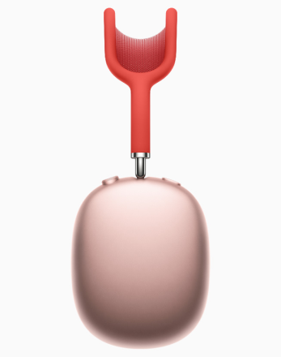

AirPods Max combine a custom acoustic design, H1 chips, and advanced software to power computational audio for a breakthrough listening experience with Adaptive EQ, Active Noise Cancellation, Transparency mode, and spatial audio.



From the canopy to the ear cushions, every part of AirPods Max is carefully crafted to provide exceptional acoustic performance for each user. The breathable knit mesh canopy, spanning the headband, is made to distribute weight and reduce on-head pressure.